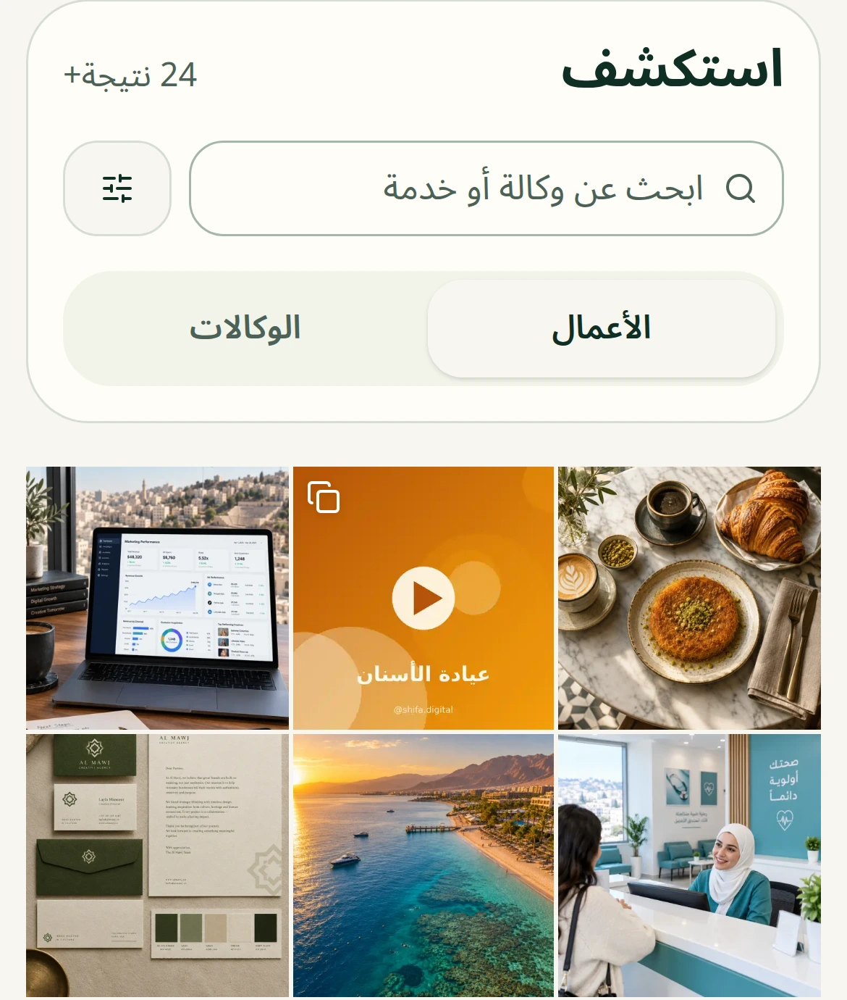

سوّق: مكانٌ واحد لأعمال الوكالات والمستقلين في العالم العربي، مرتّبةً بحسب العميل والنتيجة.
يبحث أصحاب الأعمال: من صنع ماذا؟ ويصلون إليك مباشرة.

خمسون اسماً فقط يحملون ختم الرعيل الأول. ومن وصلته هذه الرسالة… فهو منهم.
الرعيل الأول · ٠١٢
مثال
ختمٌ لا يُشترى. يُكسب… ويبقى.
امسح الرمز. عملك يستحق أن يُرى.
sawwiq.org